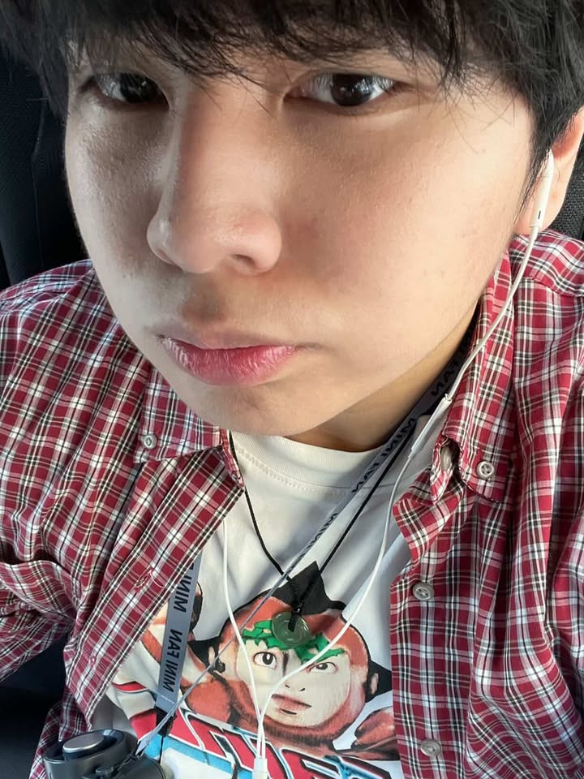
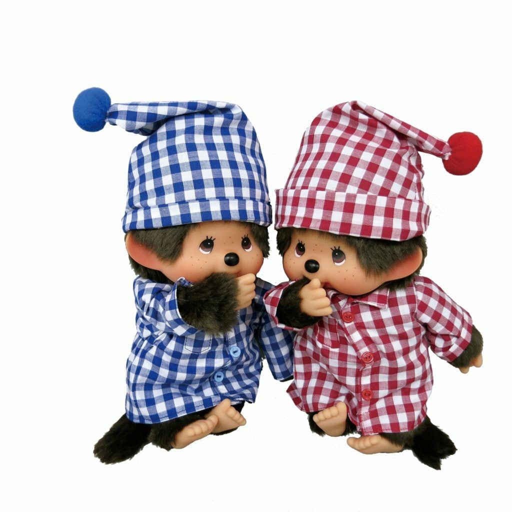
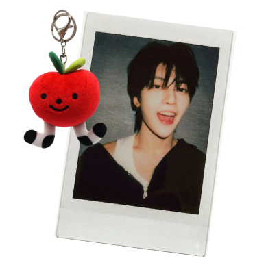
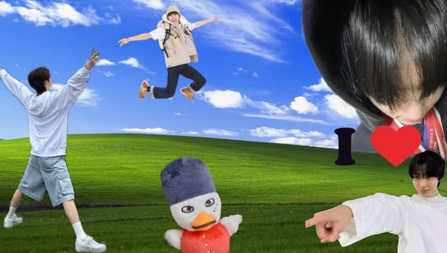
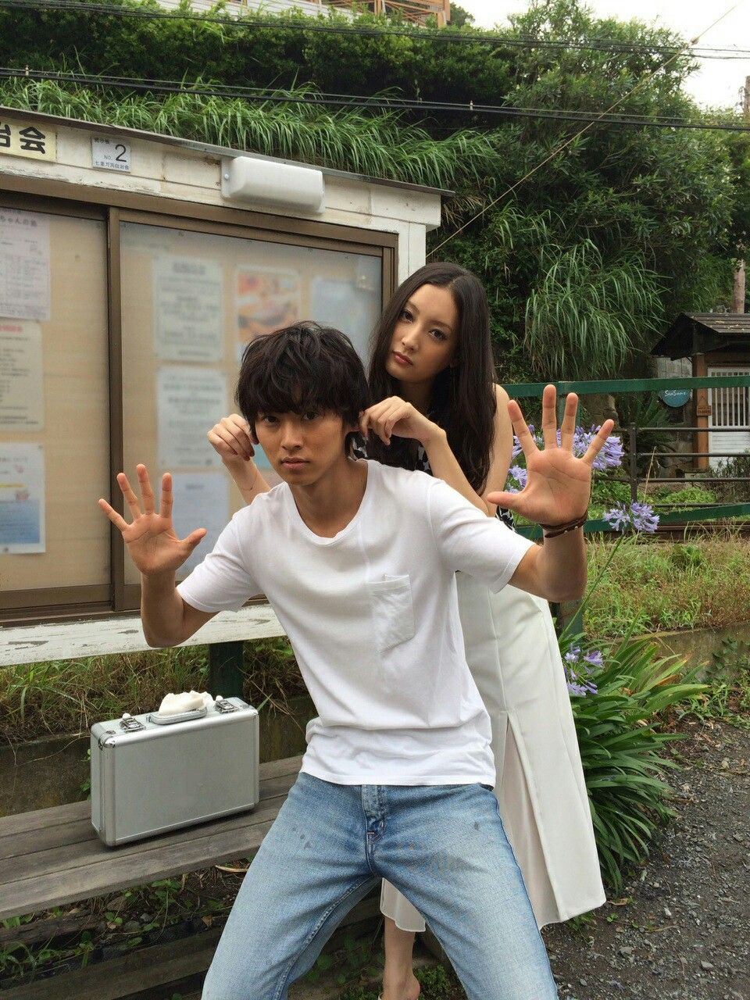
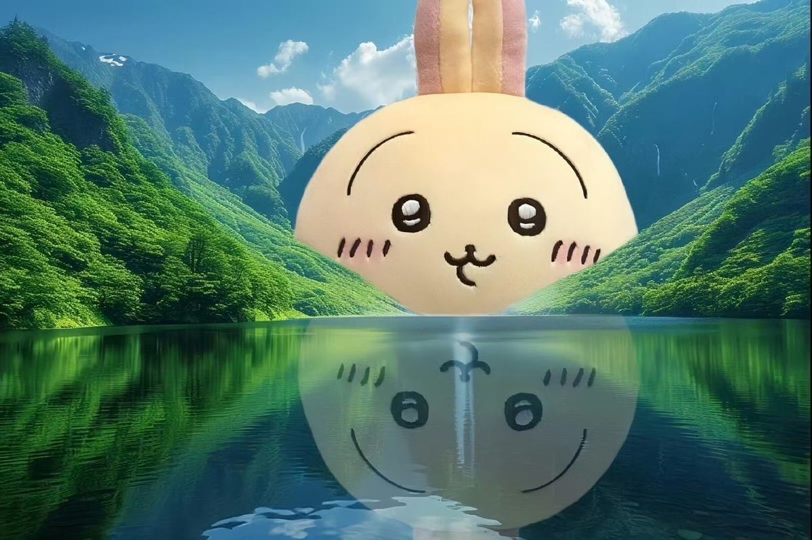
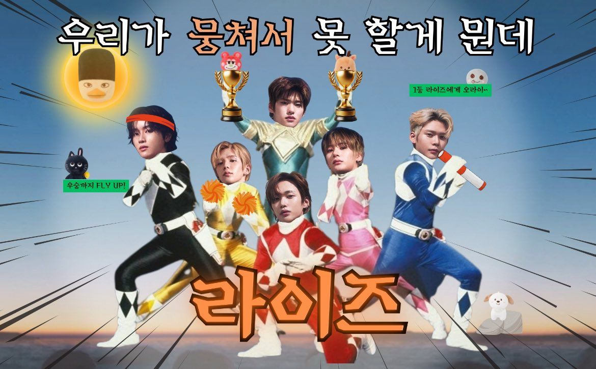
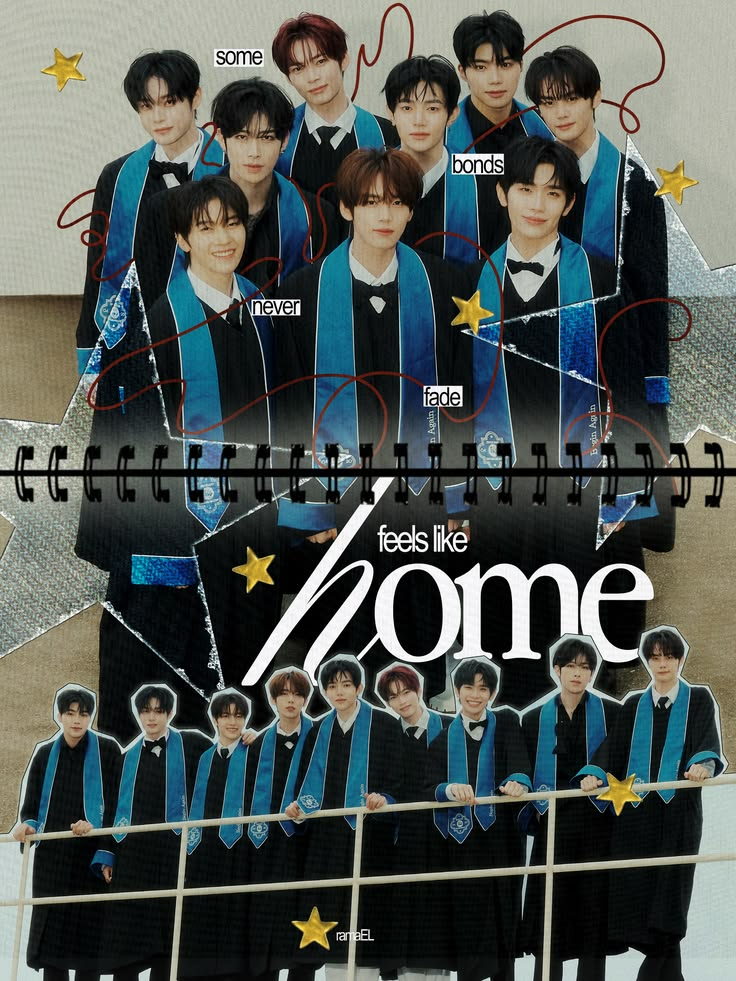

SEAN LAO // 18 // STUDENT

Status: Bored... (;´༎ຶД༎ຶ`)
Mood: Tired 💤
! FUN FACT !
I have more than 5 siblings!


I Completed Grade 11 with IGCSEs in Art, Media, First Language English, History, and Biology. Now navigating uni life, I'm balancing the chaos of academic life with my passion for digital creation.
I find beauty in the intersection of technology and nostalgia. My goal is to eventually bridge the gap between technical web development and raw, human storytelling.





Delulu - Kiiikiii
The 5-Year Journey:
At 18, I've already spent five years building my small business. I've personally managed and hosted stalls in three different major locations.
Vlogging the Process:
Every stall and every new product launch is documented through my vlogs. It's basically how I keep track of everything I've built.
Visual storytelling is how I process my world. Vlogging has basically become how I document everything I do — from business to uni life. I lean into a Y2K aesthetic and try to make everyday clips feel nostalgic instead of random.
My physical work is just as important as digital stuff. I collect random objects like receipts, tickets, and prints and turn them into scrapbook pages. It's my way of turning memories into something I can physically hold instead of just scrolling past them.

Featured Project: Poster Design Archive